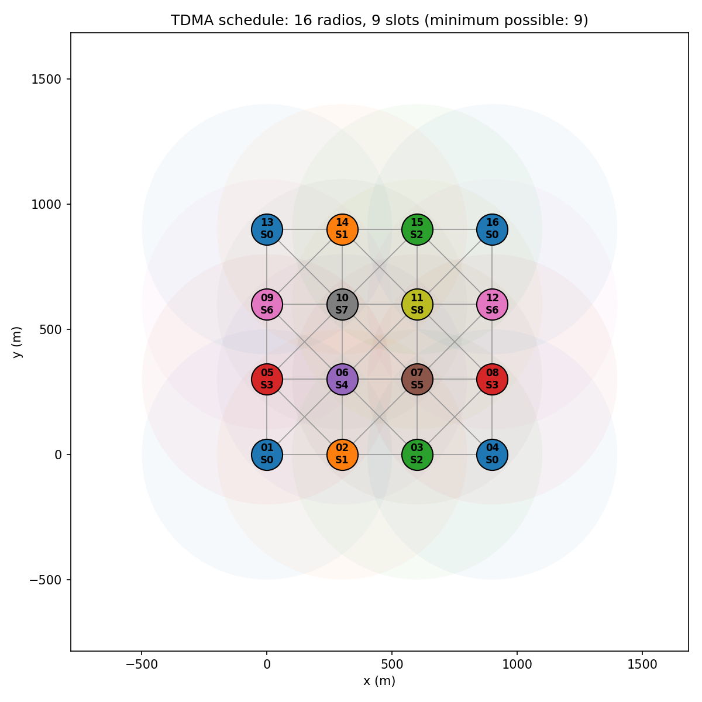
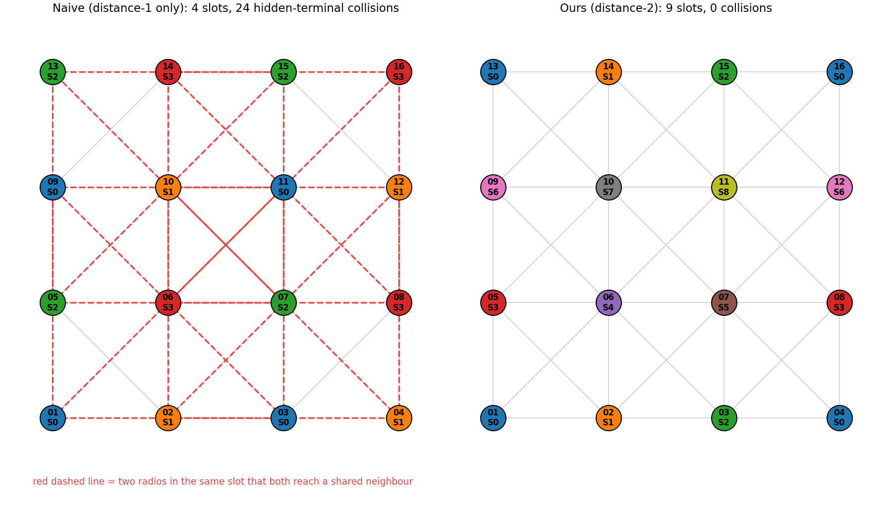
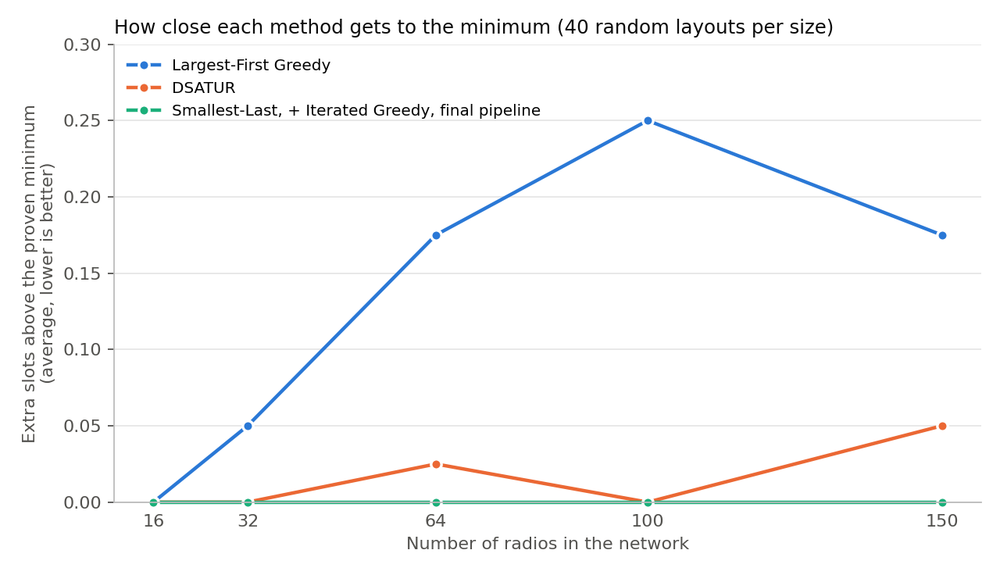

This report describes a program that decides when each radio in a network is allowed to transmit, so that no two signals ever clash at a receiver. All radios share one frequency, so time is split into short slots and each radio gets its own slot. Radios that are far enough apart can safely share a slot, which keeps the schedule short. I model the radios as a graph and solve the problem as a graph colouring task, where each colour stands for a time slot. The program tries three well-known methods, keeps the best result, tries to improve it further, and then checks it against the smallest number of slots that is possible in theory. For the 16-radio grid used in the assignment, it finds a schedule of 9 slots, and I show that no valid schedule can use fewer. On 200 random networks of up to 150 radios, it always reached that theoretical minimum. In the second part, the schedule is loaded into the EMANE network emulator. With my schedule, EMANE recorded no collisions at all, while a simpler schedule that ignores hidden terminals lost over 60% of its packets to collisions.
In a TDMA (Time Division Multiple Access) network, all radios use the same frequency and take turns. Time is divided into short slots, and a fixed group of slots, called a frame, repeats again and again. Each radio may only transmit in its own slot. The task is to write a program that reads the positions of 16 radios, gives each radio a slot, and prints the result as a list and as a table of slots against radios.
Two situations must be avoided:
Radios that are three or more hops apart can safely use the same slot, because no single radio can hear both of them. This is called spatial reuse, and it is the main way to keep the frame short.
A short frame matters because each radio gets one turn per frame. With 1 ms slots, a 9-slot frame lets each radio transmit about 111 times per second. A 16-slot frame, with one slot per radio and no reuse, allows only about 62.
I represent the network as a graph. Each radio is a point (a node), and a line (an edge) joins two radios that are within range. I call this the radio graph.
Giving slots to radios is then the same as colouring the nodes of a graph: each slot is a colour, and certain pairs of nodes must get different colours. Here the rule is that two radios must get different slots if they are one hop or two hops apart:
slot(A) ≠ slot(B) whenever A and B are 1 or 2 hops apart.
This is known as distance-2 colouring. To make it easier to solve, I build a second graph, the conflict graph, which joins every pair of radios that must not share a slot. In graph theory this is called the square of the radio graph. Once the conflict graph exists, the problem becomes an ordinary graph colouring problem, and many standard methods can be used on it directly.
Finding the smallest possible number of colours is a very hard problem. No known method can always find the best answer quickly for large networks [4]. For this reason, the brief asks for heuristics, which are practical rules that give good answers fast without a guarantee of being perfect. The same model is widely used for scheduling in radio networks [5].
The scheduler is written in Python. It uses the NetworkX library [6] to store the graphs and matplotlib to draw the figures. The code is split into small files so that each part can be tested on its own.
| File | What it does |
|---|---|
topology.py | Reads the input and builds the radio graph and the conflict graph |
coloring.py | The colouring methods and the steps that improve the result |
analysis.py | Minimum slot count, safety check, and slot sharing statistics |
planner.py | Runs all the steps in order |
report.py, plot.py | Text report, JSON output, and figures |
schedule.py | The command line program |
First, the program measures the distance between every pair of radios and joins the pairs that are 500 m apart or less. For 16 radios this is only 120 pairs, so a simple check of every pair is fast enough.
Next it builds the conflict graph. NetworkX can do this in one call, but I wrote it out step by step because it follows the hidden terminal idea directly. For every radio B:
Any two radios that are two hops apart must have a neighbour in common, so this covers every case.
All three methods use the same basic step, called greedy colouring. The radios are visited one at a time, and each one gets the lowest slot number that none of its conflicting radios already has. This is fast, but the result depends a lot on the order in which the radios are visited. The three methods differ only in how they choose that order:
All three methods run on every input and the best result is kept. Each takes only a few milliseconds, so running all of them costs almost nothing.
The best result is then passed to a method called iterated greedy [3]. It groups the radios by the slot they currently have, changes the order of the groups, and runs greedy colouring again in that new order. Radios in the same group can always share a slot again, so this step never makes the schedule longer. Sometimes one group gets absorbed into the others, which saves a slot. I repeat this 300 times, using a fixed random seed so that the results can be reproduced.
If the schedule is still longer than the theoretical minimum (Section 3.4), the program runs an exact search. It tries, in an organised way, to give out slots using one slot fewer. If it finds a way, the schedule gets shorter. If it proves there is no way, the current schedule is the best possible. This search can be slow on large networks, so it has a 5-second time limit. If the time runs out, the program keeps the best result it already has.
A heuristic gives an answer, but it does not say how good that answer is. To measure this, the program works out the smallest number of slots that any valid schedule could use, in two ways:
If the schedule uses exactly this many slots, or the exact search has shown that fewer is impossible, the report says the schedule is optimal.
The final schedule is checked by separate code that does not use the conflict graph at all. It goes back to the radio graph, counts the hops between every pair of radios that share a slot, and reports any pair that is only one or two hops apart. If it finds a problem, the program prints it and ends with an error code. I added this because a mistake in building the conflict graph would otherwise go unnoticed: the schedule would look correct for the wrong graph.
The radio positions are given as a JSON string in the format shown in the brief, or read from a file with --file. Other options set the radio range, the number of improvement rounds, the random seed, and the time limit for the exact search. The program can also save a picture of the network (--plot) and a JSON copy of the schedule for Part 2 (--json-out). The text output follows the sample in the brief, and also shows the theoretical minimum, a comparison of the three methods, and which radios share each slot.
With 300 m between neighbours and a 500 m range, each radio can hear the radios next to it horizontally, vertically and diagonally (the diagonal distance is 424 m). This gives 42 links and 90 pairs of radios that must not share a slot. The radios in the middle of the grid have 8 neighbours each, so the minimum is 9 slots. All three methods found a 9-slot schedule straight away, so the schedule is optimal. It is shown in Figure 1, and the slot table is given below.
Slot \ Node | 01 | 02 | 03 | 04 | 05 | 06 | 07 | 08 | 09 | 10 | 11 | 12 | 13 | 14 | 15 | 16 Slot 00 | 1 | 0 | 0 | 1 | 0 | 0 | 0 | 0 | 0 | 0 | 0 | 0 | 1 | 0 | 0 | 1 Slot 01 | 0 | 1 | 0 | 0 | 0 | 0 | 0 | 0 | 0 | 0 | 0 | 0 | 0 | 1 | 0 | 0 Slot 02 | 0 | 0 | 1 | 0 | 0 | 0 | 0 | 0 | 0 | 0 | 0 | 0 | 0 | 0 | 1 | 0 Slot 03 | 0 | 0 | 0 | 0 | 1 | 0 | 0 | 1 | 0 | 0 | 0 | 0 | 0 | 0 | 0 | 0 Slot 04 | 0 | 0 | 0 | 0 | 0 | 1 | 0 | 0 | 0 | 0 | 0 | 0 | 0 | 0 | 0 | 0 Slot 05 | 0 | 0 | 0 | 0 | 0 | 0 | 1 | 0 | 0 | 0 | 0 | 0 | 0 | 0 | 0 | 0 Slot 06 | 0 | 0 | 0 | 0 | 0 | 0 | 0 | 0 | 1 | 0 | 0 | 1 | 0 | 0 | 0 | 0 Slot 07 | 0 | 0 | 0 | 0 | 0 | 0 | 0 | 0 | 0 | 1 | 0 | 0 | 0 | 0 | 0 | 0 Slot 08 | 0 | 0 | 0 | 0 | 0 | 0 | 0 | 0 | 0 | 0 | 1 | 0 | 0 | 0 | 0 | 0
Twelve of the 16 radios share their slot with at least one other radio. The four corner radios all use slot 0, and each pair of corners is three hops apart, which is the closest distance at which sharing is allowed. The four radios in the centre each need their own slot, because each of them is within two hops of every other radio in the grid.

I also tested three other 16-radio layouts that are less regular than the grid.
| Layout | Links | Clashing pairs | Slots used | Minimum | Radios per slot |
|---|---|---|---|---|---|
| 4 × 4 grid, 300 m apart | 42 | 90 | 9 | 9 | 1.78 |
| Straight line, 350 m apart | 15 | 29 | 3 | 3 | 5.33 |
| Two groups 3 km apart | 45 | 56 | 8 | 8 | 2.00 |
| Random, 1.5 km square | 27 | 48 | 6 | 6 | 2.67 |
The straight line shows spatial reuse most clearly. The slots repeat as 0, 1, 2, 0, 1, 2, …, so 16 radios need only 3 slots. In the two-group layout, the groups are too far apart to disturb each other, so the larger group decides the frame length and the other group reuses the same slots.
To show why the two-hop rule matters, I also made a simpler schedule for the grid that only keeps direct neighbours apart and ignores hidden terminals. It needs only 4 slots, which looks much better at first. However, the safety check finds 24 pairs of radios that share a slot and also share a neighbour (Figure 2). At each of those shared neighbours, packets would be lost whenever both senders are active.

With only 16 radios, most sensible methods do well, so I also tested larger networks. I created 40 random networks for each size of 16, 32, 64, 100 and 150 radios. The area grew with the number of radios, so the networks stayed equally crowded. For each network I recorded how many slots each method used above the theoretical minimum.
| Radios | Largest first | Smallest last | DSATUR | Final result | Optimal | Average time |
|---|---|---|---|---|---|---|
| 16 | 0.00 | 0.00 | 0.00 | 0.00 | 40 / 40 | 5 ms |
| 32 | 0.05 | 0.00 | 0.00 | 0.00 | 40 / 40 | 12 ms |
| 64 | 0.17 | 0.00 | 0.03 | 0.00 | 40 / 40 | 26 ms |
| 100 | 0.25 | 0.00 | 0.00 | 0.00 | 40 / 40 | 54 ms |
| 150 | 0.17 | 0.00 | 0.05 | 0.00 | 40 / 40 | 125 ms |

Largest first was the weakest method and sometimes used one extra slot. Smallest last never did, in any of the 200 networks. I think this is because the networks are based on distance: in any group of radios, some are near the edge and have only a few conflicts, and smallest last makes good use of exactly that. The full program reached the minimum every time. On these networks, the improvement step and the exact search did not change any result. Their real value here was confirming that each result was the best possible. I also tried networks where radios were bunched into a few clusters, and the results were the same.
While testing the safety check, I ran the sample schedule from the brief (5 slots) on the 300 m grid. It found 21 hidden terminal clashes. For example, Node_01 and Node_03 are both in slot 0, and both can reach Node_02. Since the minimum for this grid is 9 slots, no 5-slot schedule can be correct for it. The sample was probably meant only to show the output format, or was made for different positions, but it was a useful test that the safety check catches real mistakes.